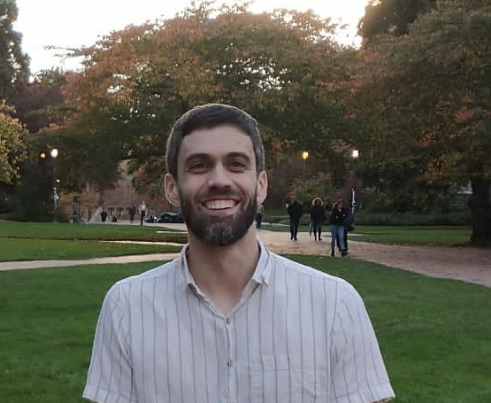

Andrea Ottolini
Assistant Professor of Mathematics
University of Alabama at Birmingham
University Hall
Birmingham, AL 35209
Email: ottolini@uab.edu
I work on probability and optimal transport, with application to fields such as statistics, combinatorics, and economics. I also work on quantum mechanics and associated problems in operator theory.
Prior to UAB, I was a Postdoctoral Scholar at the Cowles Foundation at Yale University and the University of Washington. I received my PhD in Mathematics from Stanford University in 2021, advised by Persi Diaconis.
Preprints
- A. Ottolini. Optimal support and condensation in random allocations. [arXiv]
(2026).
- A. Ottolini, S. Starr. Pal's permanent conjecture: proof for block uniform matrices. [arXiv]
(2026).
- J. Boerma, A. Ottolini, A. Tsyvinski. Multidimensional sorting: comparative statics. [arXiv]
(2025).
Publications
- R. Chen, A. Ottolini. Cutoff in total variation for the shelf shuffle. [arXiv]
Electronic Communications in Probability, 30, 1-10 (2025).
- A. Ottolini, S. Steinerberger. Greedy Matching in Optimal Transport with concave cost. [arXiv]
Annales Fennici Mathematici, 50(2), 549-562 (2025).
- A. Ottolini. Hitting times on the stochastic block model. [arXiv]
Journal of Combinatorics, 16(4), 531-551 (2025).
- B. Gerencsér, A. Ottolini. Cutoff for a class of auto-regressive models with vanishing additive noise. [arXiv]
Scandinavian Journal of Statistics, 52(1), 314-331 (2025).
- A. Ottolini, S. Steinerberger. Concentration of Hitting Times in Erdös Rényi graphs. [arXiv]
Journal of Graph Theory 107(2), 245-262 (2024).
- K. Devriendt, A. Ottolini, S. Steinerberger. Graph curvature via resistance distance. [arXiv]
Discrete Applied Mathematics 348, 68-78 (2024).
- A. Ottolini, R. Tripathi. Central limit theorem in complete feedback games. [arXiv]
Journal of Applied Probability, 61.2, 654-666 (2024).
- J. He, A. Ottolini. Card guessing and the birthday problem for sampling without replacement. [arXiv]
The Annals of Applied Probability, 33(6B), 5208-5232 (2023).
- B. Gerencsér, A. Ottolini. Rates of convergence for Gibbs sampling in the analysis of almost exchangeable data. [arXiv]
Stochastic Processes and their Applications, 165, 440-464 (2023).
- A. Ottolini, S. Steinerberger. Guessing cards with complete feedback. [arXiv]
Advances in Applied Mathematics, 150, 102569 (2023).
- N. A. Caruso, A. Michelangeli, A. Ottolini. On a comparison between absolute and relative self-adjoint extension schemes. [arXiv]
Quaestiones Mathematicae, 47(1), 1-19 (2023).
- A. Ottolini. Spectral properties of point interactions with fermionic symmetries. [Springer]
Mathematical Challenges of Zero-Range Physics: Models, Methods, Rigorous Results, Open Problems. Springer International Publishing, (2021).
- M. Gallone, A. Michelangeli, A. Ottolini. Krein-Visik-Birman self-adjoint extension theory revisited. [Springer]
Mathematical Challenges of Zero-Range Physics: Models, Methods, Rigorous Results, Open Problems. Springer International Publishing, (2021).
- A. Ottolini. Oscillations for order statistics of some discrete processes. [arXiv]
Journal of Applied Probability, 57.3, 703-719 (2020).
- S. Becker, A. Michelangeli, A. Ottolini. Spectral analysis of the 2+1 fermionic trimer with contact interactions. [arXiv]
Mathematical Physics, Analysis and Geometry 21(4), 1-42 (2018).
- A. Michelangeli, A. Ottolini, R. Scandone. Fractional powers and singular perturbations of quantum differential Hamiltonians. [arXiv]
Journal of Mathematical Physics 59(7), 072106 (2018).
- A. Michelangeli, A. Ottolini. Multiplicity of self-adjoint realisations of the (2+1)-fermionic model of Ter-Martirosyan-Skornyakov type. [arXiv]
Reports on Mathematical Physics 81(1), 1-38 (2018).
- A. Michelangeli, A. Ottolini. On point interactions realized as Ter-Martirosyan-Skornyakov Hamiltonians. [arXiv]
Reports on Mathematical Physics 79(2), 215-260 (2017).
[Full CV] |
[Google Scholar]